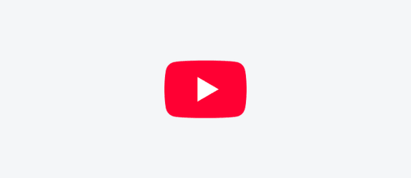
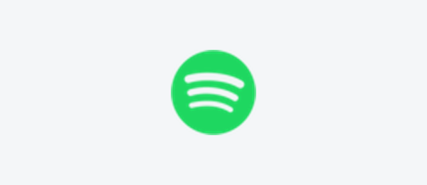
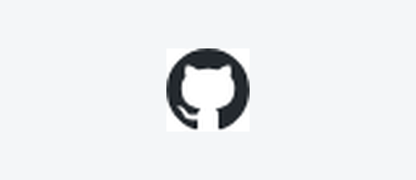
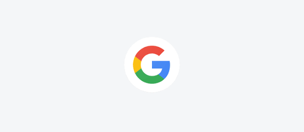
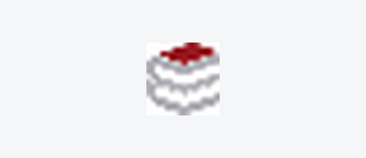

YouTube

Vídeos e conteúdos para aprender e se divertir.
Acessar YouTube ↗Cinco endereços para estudar, descobrir ideias e aproveitar o tempo livre.

Vídeos e conteúdos para aprender e se divertir.
Acessar YouTube ↗
Músicas e podcasts para diferentes momentos do dia.
Acessar Spotify ↗
Projetos, códigos e ideias para estudar programação.
Acessar GitHub ↗
Pesquisas para encontrar informações e materiais de estudo.
Acessar Google ↗
Aulas, atividades e materiais do curso técnico.
Acessar Portal Etec ↗